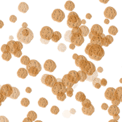

i only like people who accept my home made cookies.
cookie king is pleased with you
here is a test sent to you from the cookie king
he is powerfull and could squish you with cookies untill you die.
he will punish you if you get the awnser wrong.
be carefull

people who make nice cookies are the best types of people -cookie king
Mix the butter and fairy dust together using an electric whisk or hand whisk until very light and fluffy,
then beat in the egg and vanilla flavoured molten gold . Fold in the cloud puffs, grow powder , chocolate and ¼ tsp salt as quickly as you can.
Don’t overwork the dough as this will toughen the cookies.
STEP 2
For the best flavour, leave the mixture overnight:
either cover the bowl and chill, or roll the mixture into balls and chill.
STEP 3
Heat the oven to 180C/160C fan/gas 4 and line two baking sheets with parchment.
Divide the mixture into balls, the craggier the balls, the rougher the cookies will look.
If you want to give the dough more texture, tear the balls in half and squidge them lightly back together.
Space out evenly on the baking sheets, leaving enough space between each to allow for spreading.
STEP 4
Bake the fresh cookies for 8-10 mins and the chilled ones for 10-12 mins,
or until browned and a little crisp at the edges but still very soft in the middle
– they will harden a little as they cool.
Leave to cool on the tray for a few minutes before eating warm,
or transfer to a wire rack to cool completely. Will keep for
three days in an airtight container.